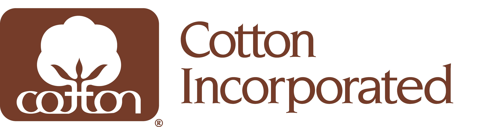
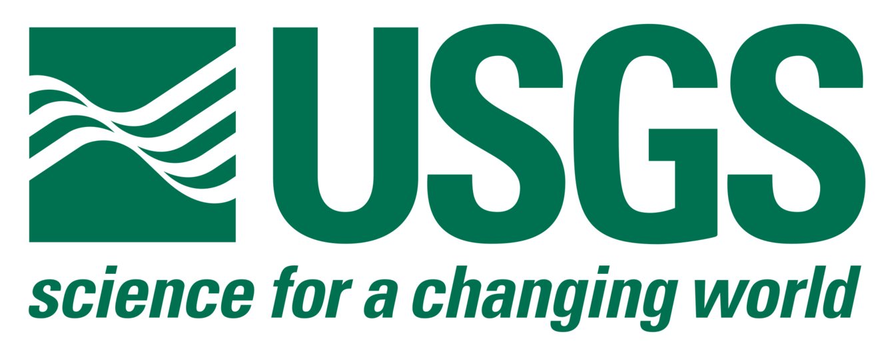
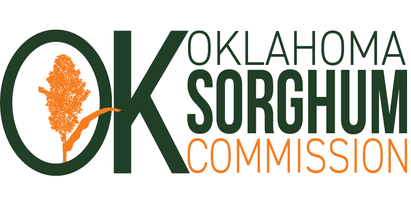
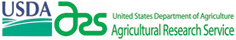
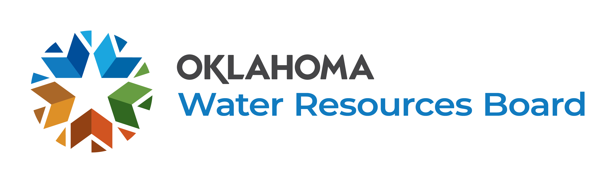
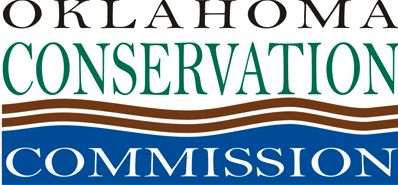
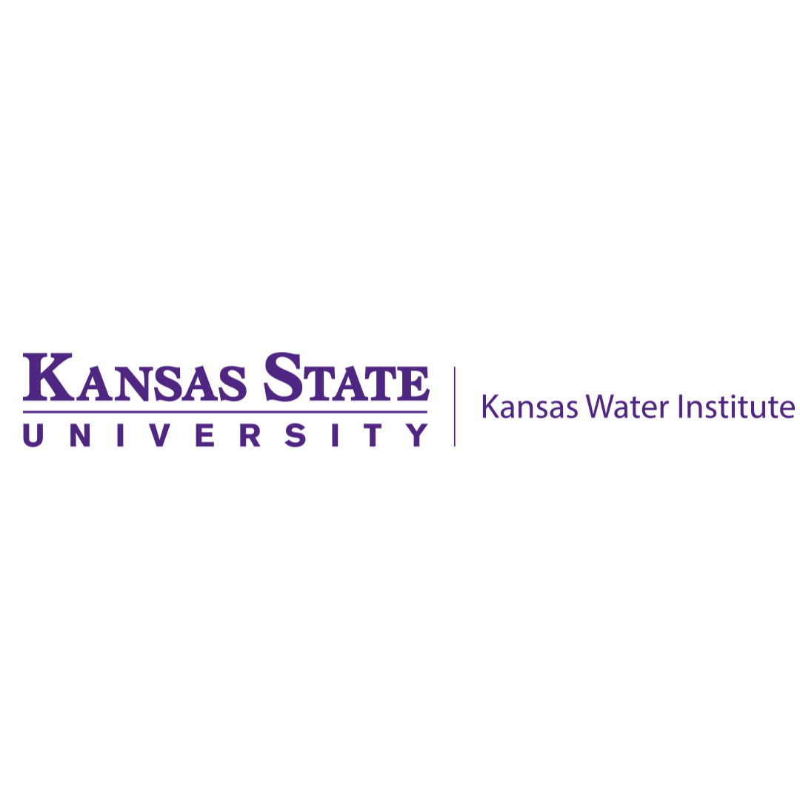
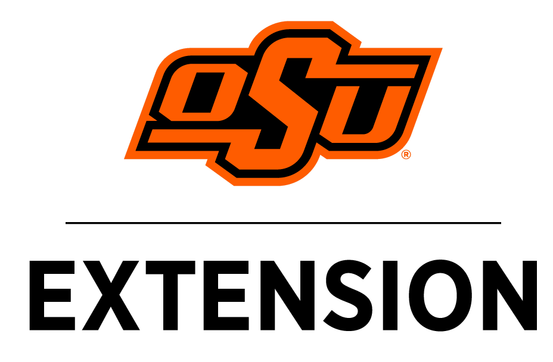

2026
Improving Water Use Efficiency of Mature Pecan Trees for Small and Medium-Sized Farms
RISE Lab
Research in Irrigation Scheduling and Engineering
Oklahoma State University
Grants & Contracts
Each amount shows the total award, followed by my program's share in parentheses. Awards since I joined the OSU faculty in July 2023 total $13.34M, with approximately $2.26M to my program. Start dates are noted for awarded projects that have not yet begun.
Oklahoma State University · 2023 to present
University of Maine · 2022 to 2023
As a Graduate Student · Oklahoma State University
Sponsors & Funders

Cotton Incorporated Oklahoma Mesonet
USGS NASA
NASA

Oklahoma Sorghum Checkoff
Ogallala Aquifer Program (USDA ARS) OSU Rural Renewal Initiative
Oklahoma Water Resources Board
Oklahoma Conservation Commission OSU College of Engineering, Architecture and Technology
Kansas Water Institute Texas Tech Davis College Water Center OSU Ag Research (OAES)
OSU Extension (OCES) Maine Technology Institute University of Maine Water Resources Research Institute